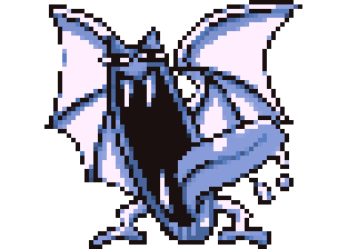

Randomic-Dex
(1º Geração)

GolbatTipo

Peso : 10kgAltura : 1,5Mts |
Nº 41 |
Descrição |
Pokémon MorcegoGolbat adora beber o sangue de seres vivos . Ele é muito ativo nas horas mais escuras da noite. Ele voa pelos céus noturnos, a procura de sangue fresco. |
|---|